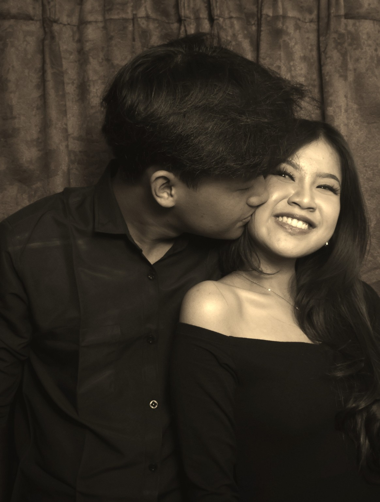
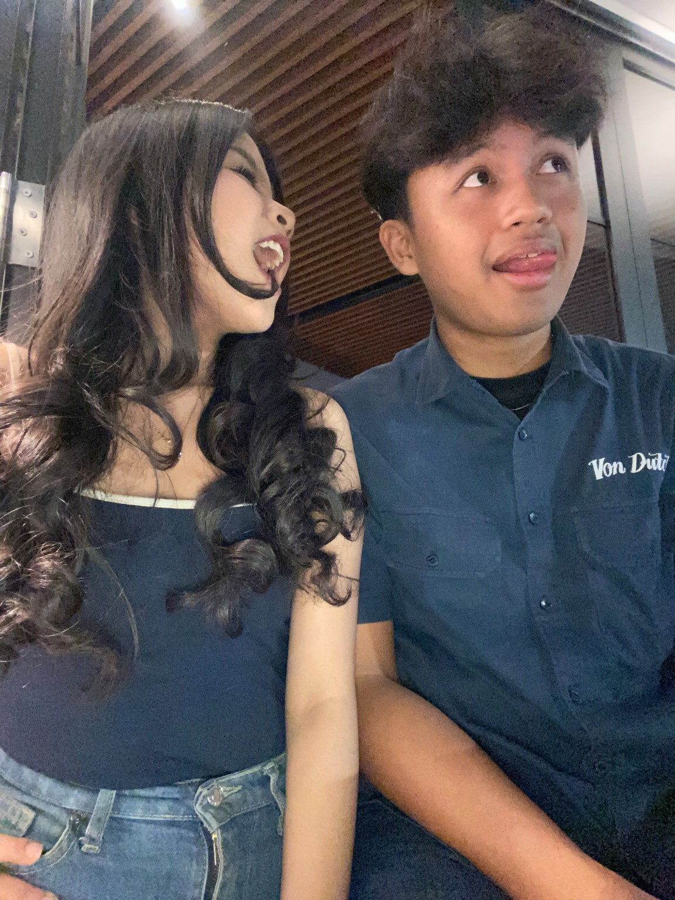
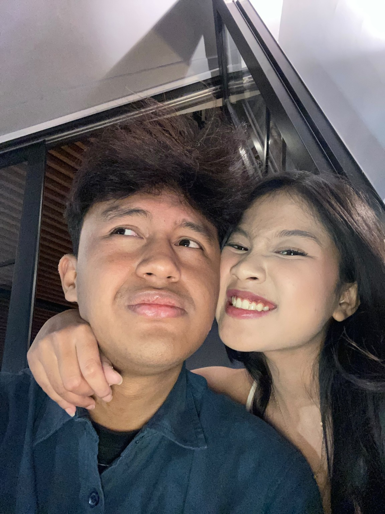
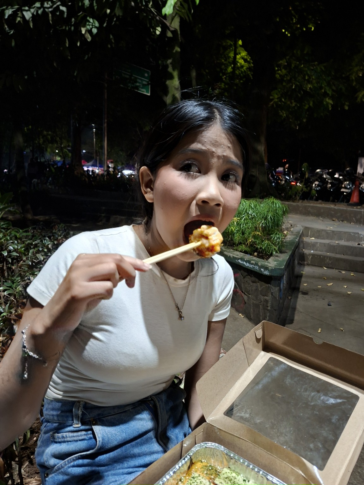
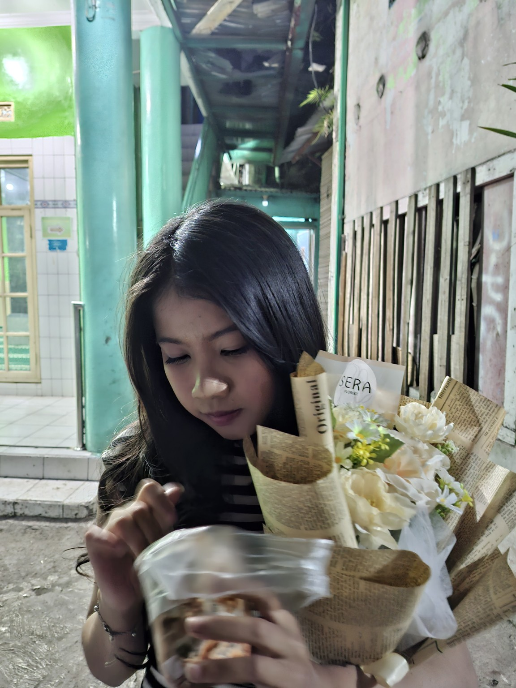

aku mau
minta maaf.
ada beberapa hal yang selama ini pengen aku sampaikan.

aku mau minta maaf.
aku sadar selama ini aku masih sering bikin kamu kecewa, capek, bahkan nangis karena sikap dan kesalahan aku.
aku nggak bisa bohong kalau aku pernah bilang aku bakal berubah. aku bahkan pernah begging dan minta kesempatan buat buktiin kalau aku bisa berubah jadi lebih baik.
tapi ternyata aku lama banget buat benar-benar berubah.
sementara itu, kamu justru bisa berubah lebih cepat. kamu bisa belajar dari kesalahan kamu, memperbaiki diri kamu, dan berusaha jadi lebih baik. sedangkan aku masih terlalu lama berkutat sama kesalahan yang sama.
aku sadar mungkin dari sisi kamu, semua janji aku dulu terdengar cuma seperti kata-kata. dan aku ngerti kalau kamu akhirnya capek nunggu aku berubah.
aku juga minta maaf karena aku belum bisa bagi waktu aku dengan baik buat kamu. aku sering terlalu sibuk sama urusan aku sendiri sampai lupa kalau kamu juga butuh waktu, perhatian, dan kehadiran aku.


aku tahu keadaan ekonomi aku juga belum seperti mantan-mantan kamu sebelumnya. aku mungkin belum bisa ngasih banyak hal yang pernah kamu dapetin sebelumnya. tapi aku nggak mau menjadikan itu alasan atas kekurangan aku sebagai pasangan.
aku pernah bikin banyak masalah.
dan aku juga pernah melakukan kesalahan yang paling aku sesali, yaitu waktu aku selingkuh.
aku tahu itu bukan kesalahan kecil. aku tahu aku pernah menghancurkan kepercayaan kamu, dan aku sadar rasa sakit dari itu nggak akan hilang cuma karena aku bilang maaf.
aku benar-benar nyesel.
aku juga minta maaf karena pernah bikin kamu nangis. orang yang seharusnya aku jaga dan bahagiain malah pernah nangis karena aku.

aku nggak mau membela diri dengan keadaan, kesibukan, ekonomi, atau alasan apa pun. salah aku tetap salah.
aku cuma nyesel karena dulu aku terlalu lama buat sadar.
aku pernah minta kamu percaya kalau aku bisa berubah, tapi ternyata aku sendiri yang bikin kamu harus menunggu terlalu lama.
sementara kamu sudah berusaha berubah lebih dulu.
aku sadar perubahan itu bukan sesuatu yang harus aku janjikan berkali-kali. seharusnya kamu bisa melihatnya dari cara aku bersikap.
aku nggak mau lagi cuma bilang aku akan berubah.
aku mau belajar buat benar-benar berubah, walaupun aku tahu seharusnya aku sudah melakukan itu dari dulu.
aku masih inget kamu
yang satu ini 🥺
karena kamu kalau udah ketemu dimsum, ya sudah. urusan dunia belakangan.

iya, yang ini 😭
aku nggak minta kamu langsung ngelupain semua kesalahan aku.
aku juga nggak minta kamu langsung percaya lagi sepenuhnya.
aku cuma berharap masih ada kesempatan buat aku memperbaiki apa yang udah aku rusak.

maaf ya, untuk semua hal yang pernah bikin kamu sakit.
maaf karena aku terlalu lama buat berubah.
dan terima kasih karena pernah sabar menghadapi aku sejauh ini.